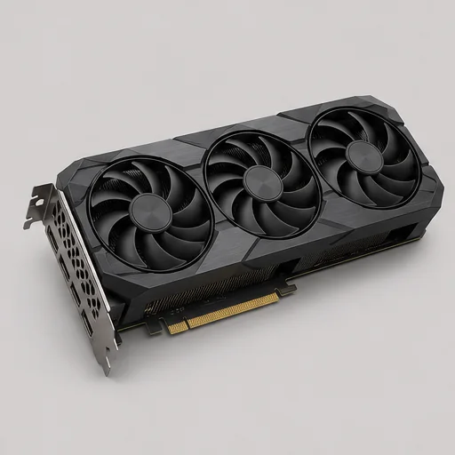

Black Friday
Black Friday 2026: So findest du einen passenden Gaming-PC-Deal
Mit Budget, Wunschliste und Preisvergleich gezielt nach einem passenden PC suchen.
Artikel lesenKaufberatungen zu Fertig-PCs, Preisvergleichen und Hardware-Upgrades. Mit konkreten Beispielen, Quellen und Links zu passenden Angeboten.
Mit Budget, Wunschliste und Preisvergleich gezielt nach einem passenden PC suchen.
Artikel lesen
Mobil spielen oder mehr Spielraum am Schreibtisch: Gesamtbudget, Ausstattung und Alltag fair vergleichen.
Artikel lesen
Von DDR-Generation bis Artikelnummer: Arbeitsspeicher ohne Fehlkauf auswählen.
Artikel lesenLeistung, Preis und Einbau prüfen – damit die neue Grafikkarte wirklich zu deinem PC passt.
Artikel lesen
Mit wenigen Fragen den passenden Geschenk-PC finden und alles für den ersten Start vorbereiten.
Artikel lesen
Den bestätigten Führungswechsel einordnen und den Grafikkartenkauf an konkreten Produkteigenschaften ausrichten.
Artikel lesenGrafikleistung und Zusatzfunktionen verständlich vergleichen, bevor du dich für eine Marke entscheidest.
Artikel lesen
Bestätigte Plattformen, offene Hardwarefragen und eine sinnvolle Strategie für deinen PC-Kauf.
Artikel lesenKosten, Zeit und Unterstützung fair vergleichen – ohne pauschalen Sieger.
Artikel lesen
Wann 16 GB weiter ausreichen und wann 32 GB deinen Alltag angenehmer machen.
Artikel lesen
Welche Budgetklasse passt zu dir – und welche Kosten kommen zum Rechner hinzu?
Artikel lesenGrafikkarte, SSD oder mehr RAM: So setzt du bei begrenztem Budget die richtigen Prioritäten.
Artikel lesenEin konkretes Angebot in sechs Schritten prüfen und den tatsächlichen Preisvorteil erkennen.
Artikel lesenAn typischen Problemen erkennen, ob mehr RAM, eine SSD oder eine andere Lösung hilft.
Artikel lesen